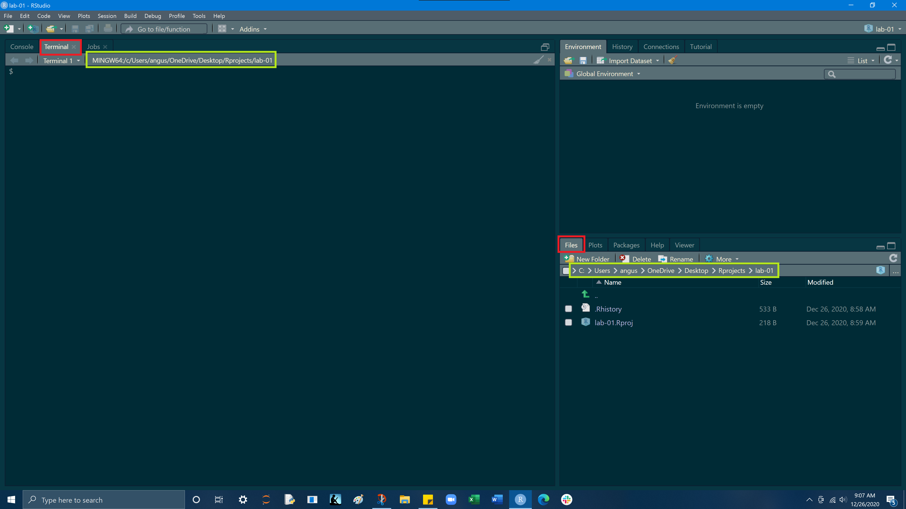

Goals
- Make a folder for this class that will be the home for all your projects
- Learn how to make a new project in RStudio and build a reproducible & organized file structure within a project
- Learn to execute simple tasks within the RStudio terminal to create files and navigate our system directory
- Overcome the initial (and understandable!) anxiety associated with the terminal
- Install packages and load them into your environment
- Explore the basics of RStudio
- Understand the different data types & data structures in R
- Get comfortable working with the different data types & data structures
Create a folder for this class
MacOS
First, we will create a new folder on our desktop that we’ll use to organize our RStudio projects for this class. Navigate to your desktop, and right click and click New folder. A new folder should appear on your desktop, to rename the folder, double click on the folder’s name and give it the name Rprojects

Windows
On windows, do the same thing but when you right click on the desktop hover over New and the click Folder

Next open RStudio, if you do not see RStudio on your desktop you can open it by searching RStudio
On a Mac, in the the top right hand corner of your screen select the magnifiying glass icon and enter RStudio
On windows, in the bottom left hand corner of your screen enter RStudio into the search box with the magnifying glass
Create a new project in RStudio
Open RStudio and click on
Filein the top left hand corner of the page, and then selectNew Project

Select
New Directory

Select
New Project

For
directory nameenter Lab-01
Undercreate project as subdirectory ofselect browse and find and select the Rprojects folder you created on your desktop
Check theOpen in new sessionbox in the bottom left hand corner
After entering the above information, selectCreate Project,
RStudio will automatically open the new project, you can also access yourlab-01.Rprojfrom your Rprojects folder on your desktop.

Build a project file structure
Now we are going to create a simple file structure to help keep our project organized. We will populate our project with
docs,data, andimgfolders. We will do this via the terminal
The terminal is a computer application. On a Mac, it is most frequently accessed via your Terminal application (do yourself a favor and download iTerm), and on Windows, through PowerShell. Fortunately, RStudio provides a built in terminal that imitates these applications within the RStudio IDE. The Terminal tab can be found next to the Console tab. If it is not visible, show it via Shift+Alt+T (or Tools > Terminal > New Terminal). Once visible, it should look something like this
The terminal is a gateway to that command line. With it, instead of pointing and clicking, you can type commands and have your computer respond. Entering commands into the terminal is useful for expediting basic tasks like file/folder creation. The terminal is also useful for exploring your file structure, and for retrieving information about your computer system.
Terminal layout
The terminal and the files tab are highlighted red and the project’s
current working directoryis in yellow.

pwd - print working directory
pwd displays the directory or folder you are currently in
My working directory is /c/Users/angus/OneDrive/Desktop/Rprojects/lab-01, yours will be slightly different but essentially the same

mkdir - make a directory
mkdir creates a new folder (directory) inside your current working directory
Entering mkdir docs into the terminal, will create a docs folder within our current working directory.
Go ahead an make docs, data, and img folders in your project.
In the bottom right hand pane, select File from the top row of tabs, you should now see your docs, data, and img folders
These 3 folders will hold all the components of your project.
The docs folder is for your Rscript (.R) and Rmarkdown (.Rmd) files, the data folder is for your .CSV, .xls, .txt files, and the img folder is for images you may use or create from within the project.
mkdir docs

mkdir data

mkdir img

cd - change directory
cd allows you to navigate through directories by changing working directory.
There are many ways to navigate using cd but today we will only need cd "the folder (directory) you want to move to" and cd ..
The first command takes us from our current working directory and by entering cd docs we move into our docs folder
cd .. will reverse this and step back a directory
We are doing this because the next thing we will do is create a file in our docs folder!

Create a R Script
touch - create a file
On a MacOS or Linux machine (anything running Bash) touch can be used to create a new file with a defined name and extension in the working directory. For example, we can create a new R file named lab-01-script.R in our working directory as follows.
You should now see an Rscript (.R) file in your docs folder

Open your lab-01-script.R file and then in the bottom left hand quadrant where our terminal is, select
Consolefrom the tab row above.

Load in your libraries
Now we will load a package into our workspace. We will do this by typing
library(tidyverse)into our RScript and then pressing theRunbutton on the top right hand corner of your RScript. Code can also be run by the keyboard commandCmd+Returnon Mac, andCtrl+Enteron Windows This is how you run lines of code from an RScript. Additionally if you highlight any portion of a code and run it, just the highlighted portion of code will be executed.
After you have loaded in the tidyverse package a bunch of seemingly random outputs should have appeared in your console. This is what you want and it is just details of the package being loaded.
When you run code, the output of that code will appear in the console, also any errors or warnings will display in the console.

Code can also be run from the console, but it does not allow you to go back and work on code, it will just take one line of code and return the output.
Running code from an RScript vs. Console:
- Enter
3 + 5into your RScript and run it. What happened? - Enter
x = 3 + 5into your RScript and run it. A value forxshould have been added to your environment pane (top right quadrent, select Environment tab if needed) - What happens if you type
xinto your RScript and run it? - Now see what happens when you type
xinto your console and press Enter
Variables
Variable values are “bound” to a name using the = or <- assignment operators (they work identically, I prefer the “=”)
a = 3
a <- 3An objects will retain the value from the last line of code run.
For example, we see that the object x is first assigned a value of 5 (x = 5),
and then x is assigned a new value of 5 + 2 (x = 5 + 2).
If x is called in the next line, we see the value of x is 7.
x = 5
x = 5 +2
x## [1] 7But if we assign x to 5 after assigning x = 5 + 2, we see that x now equals 5
x = 5
x = 5 +2
x = 5
x## [1] 5Copy and paste the following code into your RScript, but before you run it all, take a guess at what you think what value y will have at the end. and x?
x = 5
y = 2
y = x
y## [1] 5Lets say we stored information about UCSB in some objects:
school = "UCSB"
lat = 34.4140
lng = -119.8489If we wanted to we could add lat and lng
lat +lng## [1] -85.4349But what if we try and add lat and school?
lat + school## Error in lat + school: non-numeric argument to binary operatorThis non-numeric argument error is saying that one of these objects is not a numeric value, this leads into the idea that values have different classes/types
Don’t worry if you feel overwhelmed its completely normal at this stage, there is a lot of information to take in. It will takes some time to feel comfortable with the Console/RScript/Environment interactions but before long, with practice, it will become intuitive!
Data types
Values in R can be one of 6 different types :
- numeric (e.g. 2, 2.15) - values w/ decimals
2. integer (e.g. 2L) - values w/o decimals (create w/ uppercase ‘L’)
3. character (e.g. “x”, “Welcome!”)
4. logical (e.g. TRUE, FALSE)
5. raw (e.g. holds bytes)
6. complex (e.g. 1+4i) - we are going to ignore
The class() function tells us what kind of object is it (high-level)
The typeof() function can tell us the object’s data type (low-level)
>What’s the difference between 3 (the number) and ‘3’ (the character)?
class(3) # numeric## [1] "numeric"class('3') # character## [1] "character"When you surround a something in quotes (double or single), that element is coerced to the class of character, as shown above as the numeric 3 becomes a character once wrapped in quotes
Numeric
Copy the following examples of different data types and use the
class()function to examine the different data types
x = 3
y = 3 * 400
z = 5 + 6Integer
x = 2 # numeric
y = 2L # specifies as integer
z = as.integer(c(4.1, 5.2, 6.3, 6.4)) # coerces values to integer typeCharacter
You can use either Single quotes ’’ or double quotes "", R treats them identically
x = "a"
y = "bc"
z = "I like turtles!!!"Missing Values (NA)
- Missing values still need a place holder
- Missing values are denoted with NA (short for not applicable).
- Missing values are ‘infectious’: most computations involving a missing value will return another missing value.
Useful NA function
na.omit()- removes all cases where an NA appearsis.na()- indicates which elements are missing (NA), if element is NA it returns TRUE
vec = c(5,6,7,8,NA)
mean(vec) # the NA value in the vector results in a mean of NA## [1] NAmean(vec, na.rm = TRUE) # use na.rm = TRUE removes the NAs ## [1] 6.5x = c(NA, 50, NA, 9)
is.na(x) ## [1] TRUE FALSE TRUE FALSE
Data structures
Vectors
- Vectors can be created using the
c()(combine) function - The length can be checked with
length()
From the examples below, create your own vector made up of all character strings:
2. name of the state you were born in
1. name of your hometown
a = c(1,2,5.3,6,-2,4) # numeric vector
a## [1] 1.0 2.0 5.3 6.0 -2.0 4.0b = c("one","two","three") # character vector
b## [1] "one" "two" "three"c = c(TRUE,TRUE,TRUE,FALSE,TRUE,FALSE) #logical vector
c## [1] TRUE TRUE TRUE FALSE TRUE FALSEd = 1:10 # number sequence vector
d## [1] 1 2 3 4 5 6 7 8 9 10Adding elements to a vector
Here the character string “four” is added to the vector b from the above example
b = c(b, 'four')
b## [1] "one" "two" "three" "four"Now try adding your favorite food (chr) to the vector you created vector
Subsetting a vector
Here are several different methods of subsetting a vector
vector <- c(1, 2, 5.3 ,6 ,-2, 4) # numeric vector
vector[3] # subsets to only the 3rd element## [1] 5.3vector[-3] # removes 3rd element## [1] 1 2 6 -2 4vector[1:3] # subsets elements 1 through 3## [1] 1.0 2.0 5.3setNames() allows you to name each element in a vector
vector = setNames(vector, c('A', 'B','C','D', 'E', 'F')) # names elements and reassigns named vector to original vector variable using =
vector[1:6] # display elements 1 through 6## A B C D E F
## 1.0 2.0 5.3 6.0 -2.0 4.0Using setNames(), give each element of your vector an appropriate name and then subset your vector to just your name and favorite food
Lists
An ordered collection of objects (components). A list allows you to gather a variety of (possibly unrelated) objects under one name. Extends vectors and allows elements to be any type
list = list(
1:5,
"water_level",
c(TRUE, FALSE, TRUE),
c(2.3, 5.9)
)
typeof(list)## [1] "list"Subsetting a list
The content of elements of a list can be retrieved by using double square brackets.
class(list)## [1] "list"list[[1]]## [1] 1 2 3 4 5list[[1]][1]## [1] 1list[[2]]## [1] "water_level"list[[3]][2]## [1] FALSE
Dataframes
a named list of vectors.
data.frames are one of the biggest and most important ideas in R, and one of the things that make R different from other programming languages
Unlike a regular list, in a
data.frame, the length of each vector must be the same.typically dataframes are read into R via
read_csv,read_table, orread_xls, depending on the file typedataframes can also be built using the
data.frame()function
Below is an example of a dataframe with 3 columns,
num,color, andboolean
The rows of the dataframe contain the values from the vectors
num = c(1,2,3,4)
color = c("red", "white",
"green", NA)
boolean = c(TRUE,TRUE,
TRUE,FALSE)
df = data.frame(num, color, boolean)
df## num color boolean
## 1 1 red TRUE
## 2 2 white TRUE
## 3 3 green TRUE
## 4 4 <NA> FALSEStructure of a dataframe
The data frame is 4 objects (rows) by 3 variables (columns)
Notice the num, chr, logi classisifcation of the 3 different columns
str(df) ## 'data.frame': 4 obs. of 3 variables:
## $ num : num 1 2 3 4
## $ color : chr "red" "white" "green" NA
## $ boolean: logi TRUE TRUE TRUE FALSESubsetting a dataframe
df[1,2] # row 1, column 2## [1] "red"df[2,] # row 2, all columns## num color boolean
## 2 2 white TRUEdf$color[1] # row 1 in column color## [1] "red"df$num[2] # row 2 in column num## [1] 2df[1:2] # columns 1 through 2 of dataframe## num color
## 1 1 red
## 2 2 white
## 3 3 green
## 4 4 <NA>Create a dataframe by hand
df2 = data.frame(id = letters[1:8], x = 1:8, y = 9:16)
df2## id x y
## 1 a 1 9
## 2 b 2 10
## 3 c 3 11
## 4 d 4 12
## 5 e 5 13
## 6 f 6 14
## 7 g 7 15
## 8 h 8 16Useful dataframe function
head()- shows first 6 rowstail()- shows last 6 rowsdim()- returns the dimensions of data frame (i.e. number of rows and number of columns)nrow()- number of rowsncol()- number of columnsstr()- structure of data frame - name, type and preview of data in each columnnames()orcolnames()- both show the names attribute for a data framesapply(dataframe, class)- shows the class of each column in the data frame
head()
head(df2)## id x y
## 1 a 1 9
## 2 b 2 10
## 3 c 3 11
## 4 d 4 12
## 5 e 5 13
## 6 f 6 14
tail()
tail(df2)## id x y
## 3 c 3 11
## 4 d 4 12
## 5 e 5 13
## 6 f 6 14
## 7 g 7 15
## 8 h 8 16
nrow()
nrow(df2)## [1] 8Preloaded R Datasets
R comes with several preloaded data sets
running data() in an RScript will return all of the avaliable toy datasets
mtcars
For example, mtcars is a list of Motor trend cars containing each cars attributes in the columns. It is commonly used as an example dataframe
m =mtcars
class(m)## [1] "data.frame"
Dimensions & structure of mtcars
# Dimensions & structure of mtcars
dim(mtcars) ## [1] 32 11str(mtcars) ## 'data.frame': 32 obs. of 11 variables:
## $ mpg : num 21 21 22.8 21.4 18.7 18.1 14.3 24.4 22.8 19.2 ...
## $ cyl : num 6 6 4 6 8 6 8 4 4 6 ...
## $ disp: num 160 160 108 258 360 ...
## $ hp : num 110 110 93 110 175 105 245 62 95 123 ...
## $ drat: num 3.9 3.9 3.85 3.08 3.15 2.76 3.21 3.69 3.92 3.92 ...
## $ wt : num 2.62 2.88 2.32 3.21 3.44 ...
## $ qsec: num 16.5 17 18.6 19.4 17 ...
## $ vs : num 0 0 1 1 0 1 0 1 1 1 ...
## $ am : num 1 1 1 0 0 0 0 0 0 0 ...
## $ gear: num 4 4 4 3 3 3 3 4 4 4 ...
## $ carb: num 4 4 1 1 2 1 4 2 2 4 ...
Subsetting mtcars
mtcars[1:5,] # rows 1-5, all columns## mpg cyl disp hp drat wt qsec vs am gear carb
## Mazda RX4 21.0 6 160 110 3.90 2.620 16.46 0 1 4 4
## Mazda RX4 Wag 21.0 6 160 110 3.90 2.875 17.02 0 1 4 4
## Datsun 710 22.8 4 108 93 3.85 2.320 18.61 1 1 4 1
## Hornet 4 Drive 21.4 6 258 110 3.08 3.215 19.44 1 0 3 1
## Hornet Sportabout 18.7 8 360 175 3.15 3.440 17.02 0 0 3 2mtcars[1, 1:6] # row 1, columns 1-6## mpg cyl disp hp drat wt
## Mazda RX4 21 6 160 110 3.9 2.62mtcars[1:4,1:4] # rows 1 -4, cols 1-4## mpg cyl disp hp
## Mazda RX4 21.0 6 160 110
## Mazda RX4 Wag 21.0 6 160 110
## Datsun 710 22.8 4 108 93
## Hornet 4 Drive 21.4 6 258 110Assignment
1. Create vectors containing information about 8 family/friends/pets in your life
Vectors name, age, species, relation (relative to you), hair_color, eye_color, and retired
- name: character
- age: numeric
- species: character
- relation: character
- hair_color: character
- eye_color: character
- retired: logical (TRUE or FALSE)
2. Make a dataframe using these 8 vectors as your column headers
- hint:
df = data.frame(col = )
3. Explore the structure of your dataframe and its appearance in the environment pane
- Navigate to your environment (Upper right hand pane), locate your dataframe, and double click to open it in a new pane
str(df)- structure of your dataframedim(df)- dimensions of your dataframeclass(df)- class of the dataframeclass(df$column)- class of a column in the dataframe
4. Subset your dataframe using 3 different methods shown in this lab
Subset yourself and one other person and assign the output to a new dataframe variable
Remove just yourself and assign this to a new dataframe
Lastly, create a new dataframe variable that contains only names, hair color, eye color, and species and assign this to a new variable.
df$columndf[row, column]df[col1:col2]Once completed, you should have 4 dataframes in your environment (the original and 3 subsetted dataframes)
END